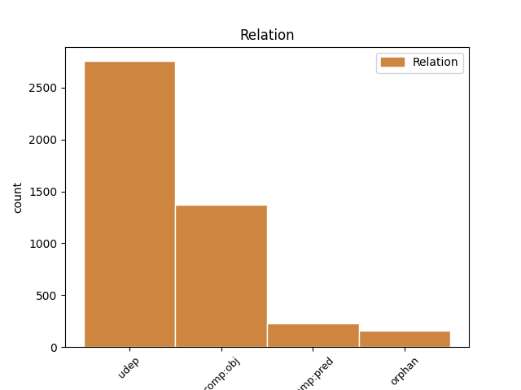
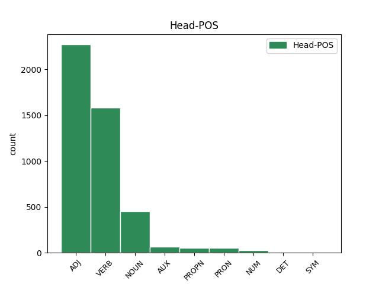
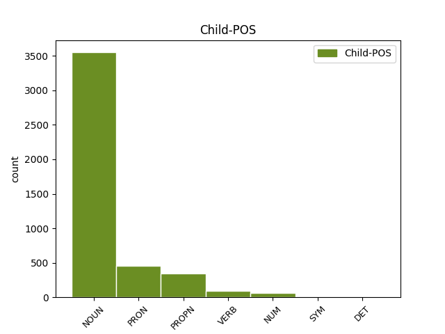

Distribution of features within this leaf



Agreement Rules sorted by frequency.
- When the dependent token is the underspecified dependency(udep) of the head token, and the head token is ADJ and the dependent token is NOUN.
1 Tööjõu _ _ _ _ 0 _ _ _
2 mobiilsus _ _ _ _ 0 _ _ _
3 , _ _ _ _ 0 _ _ _
4 mõõdetuna _ _ _ _ 0 _ _ _
5 seisundite seisund NOUN S Case=Gen|Number=Plur 6 udep _ _
6 vahelise vaheline ADJ A Case=Gen|Degree=Pos|Number=Sing 0 _ _ _
7 liikumise _ _ _ _ 0 _ _ _
8 tõenäosusega _ _ _ _ 0 _ _ _
9 , _ _ _ _ 0 _ _ _
10 oli _ _ _ _ 0 _ _ _
11 üldiselt _ _ _ _ 0 _ _ _
12 kõrgem _ _ _ _ 0 _ _ _
13 90ndate _ _ _ _ 0 _ _ _
14 alguses _ _ _ _ 0 _ _ _
15 ja _ _ _ _ 0 _ _ _
16 langes _ _ _ _ 0 _ _ _
17 90ndate _ _ _ _ 0 _ _ _
18 lõpul _ _ _ _ 0 _ _ _
19 ( _ _ _ _ 0 _ _ _
20 Eamets _ _ _ _ 0 _ _ _
21 , _ _ _ _ 0 _ _ _
22 2001 _ _ _ _ 0 _ _ _
23 : _ _ _ _ 0 _ _ _
24 161 _ _ _ _ 0 _ _ _
25 ja _ _ _ _ 0 _ _ _
26 Rõõm _ _ _ _ 0 _ _ _
27 , _ _ _ _ 0 _ _ _
28 2002 _ _ _ _ 0 _ _ _
29 : _ _ _ _ 0 _ _ _
30 7 _ _ _ _ 0 _ _ _
31 ) _ _ _ _ 0 _ _ _
32 . _ _ _ _ 0 _ _ _
1 Tabeli _ _ _ _ 0 _ _ _
2 väljadel _ _ _ _ 0 _ _ _
3 toodud _ _ _ _ 0 _ _ _
4 märgid _ _ _ _ 0 _ _ _
5 " _ _ _ _ 0 _ _ _
6 ? _ _ _ _ 0 _ _ _
7 " _ _ _ _ 0 _ _ _
8 ja _ _ _ _ 0 _ _ _
9 " _ _ _ _ 0 _ _ _
10 ? _ _ _ _ 0 _ _ _
11 " _ _ _ _ 0 _ _ _
12 kujutavad _ _ _ _ 0 _ _ _
13 endast _ _ _ _ 0 _ _ _
14 vastavalt _ _ _ _ 0 _ _ _
15 sünteetilist _ _ _ _ 0 _ _ _
16 positiivset _ _ _ _ 0 _ _ _
17 või _ _ _ _ 0 _ _ _
18 negatiivset _ _ _ _ 0 _ _ _
19 mõju mõju NOUN S Case=Par|Number=Sing 20 comp:obj _ _
20 peegeldavat peegelda=v ADJ A Case=Par|Degree=Pos|Number=Sing|Tense=Pres|VerbForm=Part|Voice=Act 0 _ _ _
21 indikaatorit _ _ _ _ 0 _ _ _
22 , _ _ _ _ 0 _ _ _
23 mis _ _ _ _ 0 _ _ _
24 on _ _ _ _ 0 _ _ _
25 saadud _ _ _ _ 0 _ _ _
26 mitme _ _ _ _ 0 _ _ _
27 allindikaatori _ _ _ _ 0 _ _ _
28 koondamise _ _ _ _ 0 _ _ _
29 teel _ _ _ _ 0 _ _ _
30 . _ _ _ _ 0 _ _ _
1 Tööhõive _ _ _ _ 0 _ _ _
2 kaldub _ _ _ _ 0 _ _ _
3 ümber _ _ _ _ 0 _ _ _
4 paiknema paiknema VERB V Case=Ill|VerbForm=Sup|Voice=Act 0 _ _ _
5 madala _ _ _ _ 0 _ _ _
6 produktiivsusega _ _ _ _ 0 _ _ _
7 ettevõtetest _ _ _ _ 0 _ _ _
8 kõrgema _ _ _ _ 0 _ _ _
9 produktiivsusega _ _ _ _ 0 _ _ _
10 ettevõtetesse ette_võte NOUN S Case=Ill|Number=Plur 4 udep _ _
11 ja _ _ _ _ 0 _ _ _
12 majandusharudesse _ _ _ _ 0 _ _ _
13 , _ _ _ _ 0 _ _ _
14 kui _ _ _ _ 0 _ _ _
15 need _ _ _ _ 0 _ _ _
16 saavutavad _ _ _ _ 0 _ _ _
17 teatud _ _ _ _ 0 _ _ _
18 turuosa _ _ _ _ 0 _ _ _
19 . _ _ _ _ 0 _ _ _
1 Kokkutõmbuv _ _ _ _ 0 _ _ _
2 protopäike _ _ _ _ 0 _ _ _
3 pidi _ _ _ _ 0 _ _ _
4 hakkama hakkama VERB V Case=Ill|VerbForm=Sup|Voice=Act 0 _ _ _
5 järjest _ _ _ _ 0 _ _ _
6 kiiremini _ _ _ _ 0 _ _ _
7 pöörlema pöörlema VERB V Case=Ill|VerbForm=Sup|Voice=Act 4 comp:pred _ SpaceAfter=No
8 , _ _ _ _ 0 _ _ _
9 mis _ _ _ _ 0 _ _ _
10 pidi _ _ _ _ 0 _ _ _
11 muutma _ _ _ _ 0 _ _ _
12 järjest _ _ _ _ 0 _ _ _
13 lapikumaks _ _ _ _ 0 _ _ _
14 ka _ _ _ _ 0 _ _ _
15 temaga _ _ _ _ 0 _ _ _
16 seotud _ _ _ _ 0 _ _ _
17 protoplaneetide _ _ _ _ 0 _ _ _
18 aine _ _ _ _ 0 _ _ _
19 pilve _ _ _ _ 0 _ _ _
20 . _ _ _ _ 0 _ _ _
1 Ettevõtte _ _ _ _ 0 _ _ _
2 tulumaksuerisus _ _ _ _ 0 _ _ _
3 Eestis _ _ _ _ 0 _ _ _
4 on _ _ _ _ 0 _ _ _
5 tõenäoliselt _ _ _ _ 0 _ _ _
6 stiimul _ _ _ _ 0 _ _ _
7 Soome Soome PROPN S Case=Gen|Number=Sing 10 udep _ _
8 ja _ _ _ _ 0 _ _ _
9 Rootsi _ _ _ _ 0 _ _ _
10 väike- väike ADJ A Case=Gen|Degree=Pos|Hyph=Yes|Number=Sing 0 _ _ _
11 ja _ _ _ _ 0 _ _ _
12 keskmistele _ _ _ _ 0 _ _ _
13 ettevõtetele _ _ _ _ 0 _ _ _
14 , _ _ _ _ 0 _ _ _
15 kelle _ _ _ _ 0 _ _ _
16 potentsiaal _ _ _ _ 0 _ _ _
17 veel _ _ _ _ 0 _ _ _
18 odavamatele _ _ _ _ 0 _ _ _
19 ja _ _ _ _ 0 _ _ _
20 kaugemal _ _ _ _ 0 _ _ _
21 asuvatele _ _ _ _ 0 _ _ _
22 turgudele _ _ _ _ 0 _ _ _
23 liikuda _ _ _ _ 0 _ _ _
24 on _ _ _ _ 0 _ _ _
25 piiratud _ _ _ _ 0 _ _ _
26 . _ _ _ _ 0 _ _ _
1 Kui _ _ _ _ 0 _ _ _
2 osaajaga _ _ _ _ 0 _ _ _
3 töö _ _ _ _ 0 _ _ _
4 ja _ _ _ _ 0 _ _ _
5 ajutine _ _ _ _ 0 _ _ _
6 töö _ _ _ _ 0 _ _ _
7 kaldub _ _ _ _ 0 _ _ _
8 olema _ _ _ _ 0 _ _ _
9 rohkem _ _ _ _ 0 _ _ _
10 nende _ _ _ _ 0 _ _ _
11 osaks _ _ _ _ 0 _ _ _
12 , _ _ _ _ 0 _ _ _
13 kes _ _ _ _ 0 _ _ _
14 on _ _ _ _ 0 _ _ _
15 tööturul töö_turg NOUN S Case=Ade|Number=Sing 18 udep _ _
16 üldiselt _ _ _ _ 0 _ _ _
17 ebasoodsamal _ _ _ _ 0 _ _ _
18 positsioonil positsioon NOUN S Case=Ade|Number=Sing 0 _ _ _
19 ( _ _ _ _ 0 _ _ _
20 äärmuslikud _ _ _ _ 0 _ _ _
21 vanuserühmad _ _ _ _ 0 _ _ _
22 ja _ _ _ _ 0 _ _ _
23 naised _ _ _ _ 0 _ _ _
24 ) _ _ _ _ 0 _ _ _
25 , _ _ _ _ 0 _ _ _
26 siis _ _ _ _ 0 _ _ _
27 kõrvaltööde _ _ _ _ 0 _ _ _
28 dünaamika _ _ _ _ 0 _ _ _
29 näitab _ _ _ _ 0 _ _ _
30 kõrvaltööde _ _ _ _ 0 _ _ _
31 kandumist _ _ _ _ 0 _ _ _
32 kõrgematele _ _ _ _ 0 _ _ _
33 ametipositsioonidele _ _ _ _ 0 _ _ _
34 ja _ _ _ _ 0 _ _ _
35 kõrgema _ _ _ _ 0 _ _ _
36 haridustasemega _ _ _ _ 0 _ _ _
37 töötajate _ _ _ _ 0 _ _ _
38 kätte _ _ _ _ 0 _ _ _
39 . _ _ _ _ 0 _ _ _
1 Sõiduta _ _ _ _ 0 _ _ _
2 oma _ _ _ _ 0 _ _ _
3 pekimägi-käskijanna _ _ _ _ 0 _ _ _
4 pargi _ _ _ _ 0 _ _ _
5 kõige _ _ _ _ 0 _ _ _
6 kaugema _ _ _ _ 0 _ _ _
7 aiamajakese _ _ _ _ 0 _ _ _
8 , _ _ _ _ 0 _ _ _
9 selle see PRON P Case=Gen|Number=Sing|PronType=Dem 10 udep _ _
10 hõbedavärvilise hõbeda-värvi=line ADJ A Case=Gen|Degree=Pos|Number=Sing 0 _ _ _
11 juurde _ _ _ _ 0 _ _ _
12 ! _ _ _ _ 0 _ _ _
1 Nelja _ _ _ _ 0 _ _ _
2 viimase _ _ _ _ 0 _ _ _
3 nädala _ _ _ _ 0 _ _ _
4 jooksul _ _ _ _ 0 _ _ _
5 kursustel _ _ _ _ 0 _ _ _
6 osalenute _ _ _ _ 0 _ _ _
7 osakaal _ _ _ _ 0 _ _ _
8 on _ _ _ _ 0 _ _ _
9 väike _ _ _ _ 0 _ _ _
10 nii _ _ _ _ 0 _ _ _
11 15-74 15-74 NUM N Case=Gen|Number=Sing|NumForm=Digit|NumType=Card 12 udep _ _
12 aastaste aastane ADJ A Case=Gen|Degree=Pos|Number=Plur 0 _ _ _
13 kui _ _ _ _ 0 _ _ _
14 ka _ _ _ _ 0 _ _ _
15 hõivatute _ _ _ _ 0 _ _ _
16 hulgas _ _ _ _ 0 _ _ _
17 . _ _ _ _ 0 _ _ _
1 Ta _ _ _ _ 0 _ _ _
2 uskus _ _ _ _ 0 _ _ _
3 , _ _ _ _ 0 _ _ _
4 et _ _ _ _ 0 _ _ _
5 läheb _ _ _ _ 0 _ _ _
6 kas _ _ _ _ 0 _ _ _
7 või _ _ _ _ 0 _ _ _
8 süsti _ _ _ _ 0 _ _ _
9 abil _ _ _ _ 0 _ _ _
10 Tartusse Tartu PROPN S Case=Ill|Number=Sing 11 udep _ _
11 võistlema võistlema VERB V Case=Ill|VerbForm=Sup|Voice=Act 0 _ _ _
12 , _ _ _ _ 0 _ _ _
13 ent _ _ _ _ 0 _ _ _
14 nädala _ _ _ _ 0 _ _ _
15 keskel _ _ _ _ 0 _ _ _
16 ei _ _ _ _ 0 _ _ _
17 saanud _ _ _ _ 0 _ _ _
18 enam _ _ _ _ 0 _ _ _
19 hüpete _ _ _ _ 0 _ _ _
20 järel _ _ _ _ 0 _ _ _
21 maanduda _ _ _ _ 0 _ _ _
22 ega _ _ _ _ 0 _ _ _
23 jalga _ _ _ _ 0 _ _ _
24 põlvest _ _ _ _ 0 _ _ _
25 kõverdada _ _ _ _ 0 _ _ _
26 . _ _ _ _ 0 _ _ _
1 “ _ _ _ _ 0 _ _ _
2 Horisont horisont NOUN S Case=Nom|Number=Sing 0 _ _ _
3 ” _ _ _ _ 0 _ _ _
4 nr. _ _ _ _ 0 _ _ _
5 3 _ _ _ _ 0 _ _ _
6 1999 1999 NUM N Case=Nom|Number=Sing|NumForm=Digit|NumType=Card 2 udep _ SpaceAfter=No
7 , _ _ _ _ 0 _ _ _
8 lk. _ _ _ _ 0 _ _ _
9 3-9 _ _ _ _ 0 _ _ _
10 . _ _ _ _ 0 _ _ _
1 Rebu _ _ _ _ 0 _ _ _
2 kõikidest _ _ _ _ 0 _ _ _
3 lipiididest _ _ _ _ 0 _ _ _
4 moodustavad _ _ _ _ 0 _ _ _
5 kolesteroolestrid _ _ _ _ 0 _ _ _
6 1,3 _ _ _ _ 0 _ _ _
7 , _ _ _ _ 0 _ _ _
8 triglütseriidid _ _ _ _ 0 _ _ _
9 63,1 _ _ _ _ 0 _ _ _
10 , _ _ _ _ 0 _ _ _
11 vabad _ _ _ _ 0 _ _ _
12 rasvhapped rasv_hape NOUN S Case=Nom|Number=Plur 0 _ _ _
13 0,9 0,9 NUM N Case=Nom|Number=Sing|NumForm=Digit|NumType=Card 12 orphan _ SpaceAfter=No
14 , _ _ _ _ 0 _ _ _
15 vaba _ _ _ _ 0 _ _ _
16 kolesterool _ _ _ _ 0 _ _ _
17 4,9 _ _ _ _ 0 _ _ _
18 ja _ _ _ _ 0 _ _ _
19 fosfolipiidid _ _ _ _ 0 _ _ _
20 29,7 _ _ _ _ 0 _ _ _
21 % _ _ _ _ 0 _ _ _
22 ( _ _ _ _ 0 _ _ _
23 Noble _ _ _ _ 0 _ _ _
24 , _ _ _ _ 0 _ _ _
25 1987 _ _ _ _ 0 _ _ _
26 ) _ _ _ _ 0 _ _ _
27 . _ _ _ _ 0 _ _ _
1 Kuigi _ _ _ _ 0 _ _ _
2 eesti- _ _ _ _ 0 _ _ _
3 ja _ _ _ _ 0 _ _ _
4 lätikeelsete _ _ _ _ 0 _ _ _
5 raamatute _ _ _ _ 0 _ _ _
6 väljaandmise _ _ _ _ 0 _ _ _
7 õigus _ _ _ _ 0 _ _ _
8 oli _ _ _ _ 0 _ _ _
9 Liivimaal Liivi_maa PROPN S Case=Ade|Number=Sing 12 udep _ _
10 vaid _ _ _ _ 0 _ _ _
11 Riia _ _ _ _ 0 _ _ _
12 eratrükikojal era_trüki_koda NOUN S Case=Ade|Number=Sing 0 _ _ _
13 ja _ _ _ _ 0 _ _ _
14 tollase _ _ _ _ 0 _ _ _
15 Tartu _ _ _ _ 0 _ _ _
16 ülikooli _ _ _ _ 0 _ _ _
17 väljaanded _ _ _ _ 0 _ _ _
18 ilmusid _ _ _ _ 0 _ _ _
19 ladina _ _ _ _ 0 _ _ _
20 , _ _ _ _ 0 _ _ _
21 kreeka _ _ _ _ 0 _ _ _
22 , _ _ _ _ 0 _ _ _
23 heebrea _ _ _ _ 0 _ _ _
24 , _ _ _ _ 0 _ _ _
25 hiljem _ _ _ _ 0 _ _ _
26 ka _ _ _ _ 0 _ _ _
27 saksa _ _ _ _ 0 _ _ _
28 ja _ _ _ _ 0 _ _ _
29 rootsi _ _ _ _ 0 _ _ _
30 keeles _ _ _ _ 0 _ _ _
31 , _ _ _ _ 0 _ _ _
32 on _ _ _ _ 0 _ _ _
33 needki _ _ _ _ 0 _ _ _
34 osa _ _ _ _ 0 _ _ _
35 eesti _ _ _ _ 0 _ _ _
36 rahvusbibliograafiast _ _ _ _ 0 _ _ _
37 . _ _ _ _ 0 _ _ _
1 Tseed _ _ _ _ 0 _ _ _
2 ta _ _ _ _ 0 _ _ _
3 mõistagi _ _ _ _ 0 _ _ _
4 ära _ _ _ _ 0 _ _ _
5 ei _ _ _ _ 0 _ _ _
6 tundnud _ _ _ _ 0 _ _ _
7 , _ _ _ _ 0 _ _ _
8 sest _ _ _ _ 0 _ _ _
9 temal _ _ _ _ 0 _ _ _
10 oli _ _ _ _ 0 _ _ _
11 oma _ _ _ _ 0 _ _ _
12 pere _ _ _ _ 0 _ _ _
13 kanade _ _ _ _ 0 _ _ _
14 jaoks _ _ _ _ 0 _ _ _
15 ainult _ _ _ _ 0 _ _ _
16 niipaljukest nii_paljuke PRON P Case=Par|Number=Sing|PronType=Ind 17 udep _ _
17 silma silm NOUN S Case=Par|Number=Sing 0 _ _ _
18 , _ _ _ _ 0 _ _ _
19 et _ _ _ _ 0 _ _ _
20 neid _ _ _ _ 0 _ _ _
21 endast _ _ _ _ 0 _ _ _
22 eemale _ _ _ _ 0 _ _ _
23 peletada _ _ _ _ 0 _ _ _
24 , _ _ _ _ 0 _ _ _
25 kui _ _ _ _ 0 _ _ _
26 kogemata _ _ _ _ 0 _ _ _
27 ette _ _ _ _ 0 _ _ _
28 jäid _ _ _ _ 0 _ _ _
29 . _ _ _ _ 0 _ _ _
1 Praegu _ _ _ _ 0 _ _ _
2 peetakse _ _ _ _ 0 _ _ _
3 läbirääkimisi _ _ _ _ 0 _ _ _
4 erinevate _ _ _ _ 0 _ _ _
5 asjasse _ _ _ _ 0 _ _ _
6 puutuvate _ _ _ _ 0 _ _ _
7 ministeeriumidega _ _ _ _ 0 _ _ _
8 , _ _ _ _ 0 _ _ _
9 leidmaks leidma VERB V Case=Tra|VerbForm=Sup|Voice=Act 0 _ _ _
10 selleks see PRON P Case=Tra|Number=Sing|PronType=Dem 9 udep _ _
11 vajalikku _ _ _ _ 0 _ _ _
12 raha _ _ _ _ 0 _ _ _
13 . _ _ _ _ 0 _ _ _
1 Arutasin _ _ _ _ 0 _ _ _
2 veel _ _ _ _ 0 _ _ _
3 , _ _ _ _ 0 _ _ _
4 et _ _ _ _ 0 _ _ _
5 kui _ _ _ _ 0 _ _ _
6 ta _ _ _ _ 0 _ _ _
7 küsis _ _ _ _ 0 _ _ _
8 , _ _ _ _ 0 _ _ _
9 et _ _ _ _ 0 _ _ _
10 kas _ _ _ _ 0 _ _ _
11 " _ _ _ _ 0 _ _ _
12 ei _ _ _ _ 0 _ _ _
13 " _ _ _ _ 0 _ _ _
14 , _ _ _ _ 0 _ _ _
15 ja _ _ _ _ 0 _ _ _
16 mina _ _ _ _ 0 _ _ _
17 vastasin _ _ _ _ 0 _ _ _
18 , _ _ _ _ 0 _ _ _
19 et _ _ _ _ 0 _ _ _
20 " _ _ _ _ 0 _ _ _
21 jaa _ _ _ _ 0 _ _ _
22 " _ _ _ _ 0 _ _ _
23 , _ _ _ _ 0 _ _ _
24 siis _ _ _ _ 0 _ _ _
25 tegelikult _ _ _ _ 0 _ _ _
26 tähendab _ _ _ _ 0 _ _ _
27 see _ _ _ _ 0 _ _ _
28 ikkagi _ _ _ _ 0 _ _ _
29 , _ _ _ _ 0 _ _ _
30 et _ _ _ _ 0 _ _ _
31 " _ _ _ _ 0 _ _ _
32 ei _ _ _ _ 0 _ _ _
33 " _ _ _ _ 0 _ _ _
34 , _ _ _ _ 0 _ _ _
35 aga _ _ _ _ 0 _ _ _
36 samas _ _ _ _ 0 _ _ _
37 ka _ _ _ _ 0 _ _ _
38 mitte _ _ _ _ 0 _ _ _
39 ja _ _ _ _ 0 _ _ _
40 semantika _ _ _ _ 0 _ _ _
41 on _ _ _ _ 0 _ _ _
42 üldse _ _ _ _ 0 _ _ _
43 üks _ _ _ _ 0 _ _ _
44 keerukas _ _ _ _ 0 _ _ _
45 asi _ _ _ _ 0 _ _ _
46 ning _ _ _ _ 0 _ _ _
47 kui _ _ _ _ 0 _ _ _
48 tulnukad _ _ _ _ 0 _ _ _
49 meile _ _ _ _ 0 _ _ _
50 satuksid _ _ _ _ 0 _ _ _
51 , _ _ _ _ 0 _ _ _
52 võtaks _ _ _ _ 0 _ _ _
53 keele keel NOUN S Case=Gen|Number=Sing 54 comp:obj _ _
54 peensuste peensus NOUN S Case=Gen|Number=Plur 0 _ _ _
55 mõistmine _ _ _ _ 0 _ _ _
56 nad _ _ _ _ 0 _ _ _
57 küll _ _ _ _ 0 _ _ _
58 võhmale _ _ _ _ 0 _ _ _
59 . _ _ _ _ 0 _ _ _
1 Sõlmede _ _ _ _ 0 _ _ _
2 suurus _ _ _ _ 0 _ _ _
3 varieerub _ _ _ _ 0 _ _ _
4 piirides _ _ _ _ 0 _ _ _
5 4-150 _ _ _ _ 0 _ _ _
6 mm _ _ _ _ 0 _ _ _
7 , _ _ _ _ 0 _ _ _
8 need see PRON P Case=Nom|Number=Plur|PronType=Dem 11 comp:obj _ _
9 võivad _ _ _ _ 0 _ _ _
10 olla _ _ _ _ 0 _ _ _
11 mõlemapoolsed mõlema_poolne ADJ A Case=Nom|Degree=Pos|Number=Plur 0 _ _ _
12 , _ _ _ _ 0 _ _ _
13 paiknedes _ _ _ _ 0 _ _ _
14 tavapäraselt _ _ _ _ 0 _ _ _
15 perifeerselt _ _ _ _ 0 _ _ _
16 ja _ _ _ _ 0 _ _ _
17 subpleuraalselt _ _ _ _ 0 _ _ _
18 ning _ _ _ _ 0 _ _ _
19 enam _ _ _ _ 0 _ _ _
20 kopsude _ _ _ _ 0 _ _ _
21 alasagarates _ _ _ _ 0 _ _ _
22 . _ _ _ _ 0 _ _ _
1 Poolfinaalis _ _ _ _ 0 _ _ _
2 alistas _ _ _ _ 0 _ _ _
3 Märtin _ _ _ _ 0 _ _ _
4 itaallase _ _ _ _ 0 _ _ _
5 Simone _ _ _ _ 0 _ _ _
6 Campedelli _ _ _ _ 0 _ _ _
7 2 _ _ _ _ 0 _ _ _
8 : _ _ _ _ 0 _ _ _
9 0 _ _ _ _ 0 _ _ _
10 , _ _ _ _ 0 _ _ _
11 Gardemeister Garde_meister PROPN S Case=Nom|Number=Sing 0 _ _ _
12 belglase _ _ _ _ 0 _ _ _
13 Francois _ _ _ _ 0 _ _ _
14 Duvali _ _ _ _ 0 _ _ _
15 2 2 NUM N Case=Nom|Number=Sing|NumForm=Digit|NumType=Card 11 orphan _ SpaceAfter=No
16 : _ _ _ _ 0 _ _ _
17 1 _ _ _ _ 0 _ _ _
18 . _ _ _ _ 0 _ _ _
1 Une _ _ _ _ 0 _ _ _
2 kvaliteeti _ _ _ _ 0 _ _ _
3 ei _ _ _ _ 0 _ _ _
4 mõjutanud _ _ _ _ 0 _ _ _
5 unes _ _ _ _ 0 _ _ _
6 rääkimine _ _ _ _ 0 _ _ _
7 , _ _ _ _ 0 _ _ _
8 see _ _ _ _ 0 _ _ _
9 esines _ _ _ _ 0 _ _ _
10 10,0 _ _ _ _ 0 _ _ _
11 %-l _ _ _ _ 0 _ _ _
12 juhtudest _ _ _ _ 0 _ _ _
13 ( _ _ _ _ 0 _ _ _
14 sagedusega _ _ _ _ 0 _ _ _
15 1-2 _ _ _ _ 0 _ _ _
16 korda _ _ _ _ 0 _ _ _
17 nädalas _ _ _ _ 0 _ _ _
18 7,3 _ _ _ _ 0 _ _ _
19 %-l _ _ _ _ 0 _ _ _
20 ; _ _ _ _ 0 _ _ _
21 3-5 _ _ _ _ 0 _ _ _
22 korda _ _ _ _ 0 _ _ _
23 nädalas _ _ _ _ 0 _ _ _
24 1,9 _ _ _ _ 0 _ _ _
25 %-l _ _ _ _ 0 _ _ _
26 ; _ _ _ _ 0 _ _ _
27 igal _ _ _ _ 0 _ _ _
28 päeval/ööl päeva+l/öö NOUN S Case=Ade|Number=Sing 29 udep _ _
29 0,8 0,8 NUM N Case=Ade|Number=Sing|NumForm=Digit|NumType=Card 0 _ _ _
30 %-l _ _ _ _ 0 _ _ _
31 ) _ _ _ _ 0 _ _ _
32 . _ _ _ _ 0 _ _ _
1 " _ _ _ _ 0 _ _ _
2 Mingit _ _ _ _ 0 _ _ _
3 sellist _ _ _ _ 0 _ _ _
4 kohustust _ _ _ _ 0 _ _ _
5 pole _ _ _ _ 0 _ _ _
6 , _ _ _ _ 0 _ _ _
7 nad _ _ _ _ 0 _ _ _
8 on _ _ _ _ 0 _ _ _
9 meist _ _ _ _ 0 _ _ _
10 väga _ _ _ _ 0 _ _ _
11 valesti _ _ _ _ 0 _ _ _
12 aru _ _ _ _ 0 _ _ _
13 saanud _ _ _ _ 0 _ _ _
14 , _ _ _ _ 0 _ _ _
15 " _ _ _ _ 0 _ _ _
16 kommenteeris _ _ _ _ 0 _ _ _
17 Ansip _ _ _ _ 0 _ _ _
18 saabunud _ _ _ _ 0 _ _ _
19 kirja _ _ _ _ 0 _ _ _
20 ja _ _ _ _ 0 _ _ _
21 selgitas _ _ _ _ 0 _ _ _
22 seda _ _ _ _ 0 _ _ _
23 ka _ _ _ _ 0 _ _ _
24 Fagnonile _ _ _ _ 0 _ _ _
25 , _ _ _ _ 0 _ _ _
26 mispeale _ _ _ _ 0 _ _ _
27 Connex _ _ _ _ 0 _ _ _
28 Transport _ _ _ _ 0 _ _ _
29 AB _ _ _ _ 0 _ _ _
30 asus _ _ _ _ 0 _ _ _
31 taas _ _ _ _ 0 _ _ _
32 Liikorit Liikor PROPN S Case=Par|Number=Sing 33 comp:obj _ _
33 puudutavaid puudutav ADJ A Case=Par|Degree=Pos|Number=Plur|Tense=Pres|VerbForm=Part|Voice=Act 0 _ _ _
34 materjale _ _ _ _ 0 _ _ _
35 läbi _ _ _ _ 0 _ _ _
36 vaatama _ _ _ _ 0 _ _ _
37 . _ _ _ _ 0 _ _ _
1 Nii _ _ _ _ 0 _ _ _
2 võiks _ _ _ _ 0 _ _ _
3 Liedtrandi _ _ _ _ 0 _ _ _
4 soovitusel _ _ _ _ 0 _ _ _
5 ka _ _ _ _ 0 _ _ _
6 kolmandal _ _ _ _ 0 _ _ _
7 nädalal _ _ _ _ 0 _ _ _
8 teha _ _ _ _ 0 _ _ _
9 kaks _ _ _ _ 0 _ _ _
10 aeroobset _ _ _ _ 0 _ _ _
11 treeningut _ _ _ _ 0 _ _ _
12 ja _ _ _ _ 0 _ _ _
13 kaks _ _ _ _ 0 _ _ _
14 korda kord NOUN S Case=Par|Number=Sing 15 orphan _ _
15 jõuharjutusi jõu_harjutus NOUN S Case=Par|Number=Plur 0 _ _ _
16 . _ _ _ _ 0 _ _ _
1 Noppides _ _ _ _ 0 _ _ _
2 aiast _ _ _ _ 0 _ _ _
3 esimesed esimene PRON P Case=Nom|Number=Plur|PronType=Dem 5 comp:obj _ _
4 küpsed _ _ _ _ 0 _ _ _
5 punapõsed puna_põsk NOUN S Case=Nom|Number=Plur 0 _ _ _
6 , _ _ _ _ 0 _ _ _
7 uimastab _ _ _ _ 0 _ _ _
8 ja _ _ _ _ 0 _ _ _
9 inspireerib _ _ _ _ 0 _ _ _
10 meid _ _ _ _ 0 _ _ _
11 seletamatu _ _ _ _ 0 _ _ _
12 hõrk _ _ _ _ 0 _ _ _
13 aroom _ _ _ _ 0 _ _ _
14 . _ _ _ _ 0 _ _ _
1 Vesinik _ _ _ _ 0 _ _ _
2 moodustab _ _ _ _ 0 _ _ _
3 Päikese _ _ _ _ 0 _ _ _
4 ja _ _ _ _ 0 _ _ _
5 paljude _ _ _ _ 0 _ _ _
6 teiste _ _ _ _ 0 _ _ _
7 tähtede _ _ _ _ 0 _ _ _
8 tavapärasest _ _ _ _ 0 _ _ _
9 koostisest _ _ _ _ 0 _ _ _
10 73 _ _ _ _ 0 _ _ _
11 % _ _ _ _ 0 _ _ _
12 ja _ _ _ _ 0 _ _ _
13 heelium heelium NOUN S Case=Nom|Number=Sing 0 _ _ _
14 25 _ _ _ _ 0 _ _ _
15 % % SYM N Case=Nom|Number=Sing|NumForm=Digit|NumType=Card 13 orphan _ SpaceAfter=No
16 . _ _ _ _ 0 _ _ _
1 Nende _ _ _ _ 0 _ _ _
2 vanavanemad _ _ _ _ 0 _ _ _
3 elavad _ _ _ _ 0 _ _ _
4 välismaal _ _ _ _ 0 _ _ _
5 : _ _ _ _ 0 _ _ _
6 Tatjana _ _ _ _ 0 _ _ _
7 Morarašil _ _ _ _ 0 _ _ _
8 Moldovas _ _ _ _ 0 _ _ _
9 , _ _ _ _ 0 _ _ _
10 Oljal _ _ _ _ 0 _ _ _
11 Valgevenes _ _ _ _ 0 _ _ _
12 , _ _ _ _ 0 _ _ _
13 Tanjal Tanja PROPN S Case=Ade|Number=Sing 0 _ _ _
14 Venemaal Vene_maa PROPN S Case=Ade|Number=Sing 13 orphan _ SpaceAfter=No
15 . _ _ _ _ 0 _ _ _
1 Sikhi _ _ _ _ 0 _ _ _
2 mehed _ _ _ _ 0 _ _ _
3 lisavad _ _ _ _ 0 _ _ _
4 oma _ _ _ _ 0 _ _ _
5 nimele _ _ _ _ 0 _ _ _
6 liite _ _ _ _ 0 _ _ _
7 Singh _ _ _ _ 0 _ _ _
8 ( _ _ _ _ 0 _ _ _
9 “ _ _ _ _ 0 _ _ _
10 lõvi _ _ _ _ 0 _ _ _
11 ” _ _ _ _ 0 _ _ _
12 ) _ _ _ _ 0 _ _ _
13 ja _ _ _ _ 0 _ _ _
14 naised naine NOUN S Case=Nom|Number=Plur 0 _ _ _
15 Kaur Kaur PROPN S Case=Nom|Number=Sing 14 orphan _ _
16 ( _ _ _ _ 0 _ _ _
17 “ _ _ _ _ 0 _ _ _
18 emalõvi _ _ _ _ 0 _ _ _
19 ” _ _ _ _ 0 _ _ _
20 ) _ _ _ _ 0 _ _ _
21 . _ _ _ _ 0 _ _ _
1 Juba _ _ _ _ 0 _ _ _
2 Prantsuse _ _ _ _ 0 _ _ _
3 teadlane _ _ _ _ 0 _ _ _
4 Jean _ _ _ _ 0 _ _ _
5 Baptiste _ _ _ _ 0 _ _ _
6 Joseph _ _ _ _ 0 _ _ _
7 Fourier _ _ _ _ 0 _ _ _
8 olevat _ _ _ _ 0 _ _ _
9 osutanud _ _ _ _ 0 _ _ _
10 , _ _ _ _ 0 _ _ _
11 et _ _ _ _ 0 _ _ _
12 mõnedel _ _ _ _ 0 _ _ _
13 gaasidel _ _ _ _ 0 _ _ _
14 atmosfääris _ _ _ _ 0 _ _ _
15 on _ _ _ _ 0 _ _ _
16 kasvuhoonega _ _ _ _ 0 _ _ _
17 sarnane _ _ _ _ 0 _ _ _
18 omadus omadus NOUN S Case=Nom|Number=Sing 0 _ _ _
19 olla _ _ _ _ 0 _ _ _
20 soojuse _ _ _ _ 0 _ _ _
21 lõks lõks NOUN S Case=Nom|Number=Sing 18 comp:pred _ SpaceAfter=No
22 . _ _ _ _ 0 _ _ _
1 Mis mis PRON P Case=Nom|Number=Sing|PronType=Int,Rel 2 comp:obj _ _
2 te sina PRON P Case=Nom|Number=Plur|Person=2|PronType=Prs 0 _ _ _
3 nüüd _ _ _ _ 0 _ _ _
4 ! _ _ _ _ 0 _ _ _
1 Naine _ _ _ _ 0 _ _ _
2 teavitas _ _ _ _ 0 _ _ _
3 asjast _ _ _ _ 0 _ _ _
4 ESS _ _ _ _ 0 _ _ _
5 Lõuna _ _ _ _ 0 _ _ _
6 turvameest _ _ _ _ 0 _ _ _
7 , _ _ _ _ 0 _ _ _
8 viimane viimane ADJ A Case=Nom|Degree=Pos|Number=Sing 0 _ _ _
9 omakorda _ _ _ _ 0 _ _ _
10 politseid politsei NOUN S Case=Nom|Number=Plur 8 orphan _ SpaceAfter=No
11 . _ _ _ _ 0 _ _ _
1 " _ _ _ _ 0 _ _ _
2 Püüan _ _ _ _ 0 _ _ _
3 kõigest _ _ _ _ 0 _ _ _
4 väest _ _ _ _ 0 _ _ _
5 , _ _ _ _ 0 _ _ _
6 et _ _ _ _ 0 _ _ _
7 sulle _ _ _ _ 0 _ _ _
8 meele _ _ _ _ 0 _ _ _
9 järele _ _ _ _ 0 _ _ _
10 olla _ _ _ _ 0 _ _ _
11 , _ _ _ _ 0 _ _ _
12 juba _ _ _ _ 0 _ _ _
13 aastaid _ _ _ _ 0 _ _ _
14 elan _ _ _ _ 0 _ _ _
15 rohkem _ _ _ _ 0 _ _ _
16 pliidi _ _ _ _ 0 _ _ _
17 taga _ _ _ _ 0 _ _ _
18 ja _ _ _ _ 0 _ _ _
19 pesuköögis _ _ _ _ 0 _ _ _
20 , _ _ _ _ 0 _ _ _
21 et _ _ _ _ 0 _ _ _
22 ainult _ _ _ _ 0 _ _ _
23 sulle _ _ _ _ 0 _ _ _
24 suupärast _ _ _ _ 0 _ _ _
25 toitu _ _ _ _ 0 _ _ _
26 valmistada _ _ _ _ 0 _ _ _
27 , _ _ _ _ 0 _ _ _
28 sinu _ _ _ _ 0 _ _ _
29 pesu _ _ _ _ 0 _ _ _
30 pesta _ _ _ _ 0 _ _ _
31 ja _ _ _ _ 0 _ _ _
32 oma _ _ _ _ 0 _ _ _
33 kalli _ _ _ _ 0 _ _ _
34 papa _ _ _ _ 0 _ _ _
35 eest _ _ _ _ 0 _ _ _
36 igal _ _ _ _ 0 _ _ _
37 kombel _ _ _ _ 0 _ _ _
38 hoolitseda _ _ _ _ 0 _ _ _
39 , _ _ _ _ 0 _ _ _
40 aga _ _ _ _ 0 _ _ _
41 sina sina PRON P Case=Nom|Number=Sing|Person=2|PronType=Prs 0 _ _ _
42 muudkui _ _ _ _ 0 _ _ _
43 mürk mürk NOUN S Case=Nom|Number=Sing 41 comp:obj _ _
44 ja _ _ _ _ 0 _ _ _
45 mürk _ _ _ _ 0 _ _ _
46 ! _ _ _ _ 0 _ _ _
1 Niisugune nii_sugune PRON P Case=Nom|Number=Sing|PronType=Dem 0 _ _ _
2 kord kord NOUN S Case=Nom|Number=Sing 1 udep _ _
3 elav _ _ _ _ 0 _ _ _
4 olend _ _ _ _ 0 _ _ _
5 on _ _ _ _ 0 _ _ _
6 , _ _ _ _ 0 _ _ _
7 ta _ _ _ _ 0 _ _ _
8 ei _ _ _ _ 0 _ _ _
9 lepi _ _ _ _ 0 _ _ _
10 , _ _ _ _ 0 _ _ _
11 jookseb _ _ _ _ 0 _ _ _
12 peaga _ _ _ _ 0 _ _ _
13 vastu _ _ _ _ 0 _ _ _
14 seina _ _ _ _ 0 _ _ _
15 , _ _ _ _ 0 _ _ _
16 proovib _ _ _ _ 0 _ _ _
17 ikka _ _ _ _ 0 _ _ _
18 ja _ _ _ _ 0 _ _ _
19 uuesti _ _ _ _ 0 _ _ _
20 , _ _ _ _ 0 _ _ _
21 lõpuks _ _ _ _ 0 _ _ _
22 teeb _ _ _ _ 0 _ _ _
23 küll _ _ _ _ 0 _ _ _
24 näo _ _ _ _ 0 _ _ _
25 , _ _ _ _ 0 _ _ _
26 et _ _ _ _ 0 _ _ _
27 on _ _ _ _ 0 _ _ _
28 leppinud _ _ _ _ 0 _ _ _
29 , _ _ _ _ 0 _ _ _
30 püüab _ _ _ _ 0 _ _ _
31 ka _ _ _ _ 0 _ _ _
32 ennast _ _ _ _ 0 _ _ _
33 petta _ _ _ _ 0 _ _ _
34 , _ _ _ _ 0 _ _ _
35 tegelikult _ _ _ _ 0 _ _ _
36 loodab _ _ _ _ 0 _ _ _
37 ja _ _ _ _ 0 _ _ _
38 ootab _ _ _ _ 0 _ _ _
39 aega _ _ _ _ 0 _ _ _
40 , _ _ _ _ 0 _ _ _
41 mil _ _ _ _ 0 _ _ _
42 võib _ _ _ _ 0 _ _ _
43 oma _ _ _ _ 0 _ _ _
44 tahtmist _ _ _ _ 0 _ _ _
45 saada _ _ _ _ 0 _ _ _
46 . _ _ _ _ 0 _ _ _
1 Viimastel _ _ _ _ 0 _ _ _
2 aastatel _ _ _ _ 0 _ _ _
3 peavad _ _ _ _ 0 _ _ _
4 osad _ _ _ _ 0 _ _ _
5 töötute _ _ _ _ 0 _ _ _
6 vanusegrupid _ _ _ _ 0 _ _ _
7 olema olema AUX V Case=Ill|VerbForm=Sup|Voice=Act 0 _ _ _
8 registreeritud _ _ _ _ 0 _ _ _
9 ümberõppe _ _ _ _ 0 _ _ _
10 programmidesse programm NOUN S Case=Ill|Number=Plur 7 udep _ _
11 või _ _ _ _ 0 _ _ _
12 minema _ _ _ _ 0 _ _ _
13 ühiskondlikule _ _ _ _ 0 _ _ _
14 tööle _ _ _ _ 0 _ _ _
15 , _ _ _ _ 0 _ _ _
16 et _ _ _ _ 0 _ _ _
17 saada _ _ _ _ 0 _ _ _
18 peale _ _ _ _ 0 _ _ _
19 esimest _ _ _ _ 0 _ _ _
20 kuut _ _ _ _ 0 _ _ _
21 kuud _ _ _ _ 0 _ _ _
22 jätkuvalt _ _ _ _ 0 _ _ _
23 abiraha _ _ _ _ 0 _ _ _
24 . _ _ _ _ 0 _ _ _
Disagree Examples:
1 Nemad _ _ _ _ 0 _ _ _
2 peavad _ _ _ _ 0 _ _ _
3 olema _ _ _ _ 0 _ _ _
4 veendunud _ _ _ _ 0 _ _ _
5 ja _ _ _ _ 0 _ _ _
6 tuvastama tuvastama VERB V Case=Ill|VerbForm=Sup|Voice=Act 0 _ _ _
7 raha _ _ _ _ 0 _ _ _
8 allika allikas NOUN S Case=Gen|Number=Sing 6 comp:obj _ SpaceAfter=No
9 . _ _ _ _ 0 _ _ _
1 Hansapanga _ _ _ _ 0 _ _ _
2 suurim _ _ _ _ 0 _ _ _
3 kahtlusalune _ _ _ _ 0 _ _ _
4 tehing _ _ _ _ 0 _ _ _
5 seondub _ _ _ _ 0 _ _ _
6 Zürichis Zürich PROPN S Case=Ine|Number=Sing 7 udep _ _
7 asuva asuv ADJ A Case=Gen|Degree=Pos|Number=Sing|Tense=Pres|VerbForm=Part|Voice=Act 0 _ _ _
8 Cantrade _ _ _ _ 0 _ _ _
9 Private _ _ _ _ 0 _ _ _
10 Bankiga _ _ _ _ 0 _ _ _
11 . _ _ _ _ 0 _ _ _
1 Need _ _ _ _ 0 _ _ _
2 on _ _ _ _ 0 _ _ _
3 kontod _ _ _ _ 0 _ _ _
4 , _ _ _ _ 0 _ _ _
5 mille _ _ _ _ 0 _ _ _
6 kasutaja _ _ _ _ 0 _ _ _
7 ei _ _ _ _ 0 _ _ _
8 pea _ _ _ _ 0 _ _ _
9 raha _ _ _ _ 0 _ _ _
10 liigutamiseks liigutamine NOUN S Case=Tra|Number=Sing 17 udep _ _
11 enda _ _ _ _ 0 _ _ _
12 passi _ _ _ _ 0 _ _ _
13 või _ _ _ _ 0 _ _ _
14 mõnda _ _ _ _ 0 _ _ _
15 muud _ _ _ _ 0 _ _ _
16 dokumenti _ _ _ _ 0 _ _ _
17 esitama esitama VERB V Case=Ill|VerbForm=Sup|Voice=Act 0 _ _ _
18 , _ _ _ _ 0 _ _ _
19 vaid _ _ _ _ 0 _ _ _
20 ta _ _ _ _ 0 _ _ _
21 saab _ _ _ _ 0 _ _ _
22 seda _ _ _ _ 0 _ _ _
23 teha _ _ _ _ 0 _ _ _
24 spetsiaalse _ _ _ _ 0 _ _ _
25 arvukoodi _ _ _ _ 0 _ _ _
26 abil _ _ _ _ 0 _ _ _
27 . _ _ _ _ 0 _ _ _
1 Need _ _ _ _ 0 _ _ _
2 on _ _ _ _ 0 _ _ _
3 kontod _ _ _ _ 0 _ _ _
4 , _ _ _ _ 0 _ _ _
5 mille _ _ _ _ 0 _ _ _
6 kasutaja _ _ _ _ 0 _ _ _
7 ei _ _ _ _ 0 _ _ _
8 pea _ _ _ _ 0 _ _ _
9 raha _ _ _ _ 0 _ _ _
10 liigutamiseks _ _ _ _ 0 _ _ _
11 enda _ _ _ _ 0 _ _ _
12 passi pass NOUN S Case=Par|Number=Sing 17 comp:obj _ _
13 või _ _ _ _ 0 _ _ _
14 mõnda _ _ _ _ 0 _ _ _
15 muud _ _ _ _ 0 _ _ _
16 dokumenti _ _ _ _ 0 _ _ _
17 esitama esitama VERB V Case=Ill|VerbForm=Sup|Voice=Act 0 _ _ _
18 , _ _ _ _ 0 _ _ _
19 vaid _ _ _ _ 0 _ _ _
20 ta _ _ _ _ 0 _ _ _
21 saab _ _ _ _ 0 _ _ _
22 seda _ _ _ _ 0 _ _ _
23 teha _ _ _ _ 0 _ _ _
24 spetsiaalse _ _ _ _ 0 _ _ _
25 arvukoodi _ _ _ _ 0 _ _ _
26 abil _ _ _ _ 0 _ _ _
27 . _ _ _ _ 0 _ _ _
1 Esmalt _ _ _ _ 0 _ _ _
2 liikus _ _ _ _ 0 _ _ _
3 see _ _ _ _ 0 _ _ _
4 raha _ _ _ _ 0 _ _ _
5 New New PROPN S Case=Ine|Number=Sing 7 udep _ _
6 Yorgis _ _ _ _ 0 _ _ _
7 asuvasse asuv ADJ A Case=Ill|Degree=Pos|Number=Sing|Tense=Pres|VerbForm=Part|Voice=Act 0 _ _ _
8 Bankers _ _ _ _ 0 _ _ _
9 Trusti _ _ _ _ 0 _ _ _
10 ja _ _ _ _ 0 _ _ _
11 sealt _ _ _ _ 0 _ _ _
12 edasi _ _ _ _ 0 _ _ _
13 Hansapanka _ _ _ _ 0 _ _ _
14 . _ _ _ _ 0 _ _ _